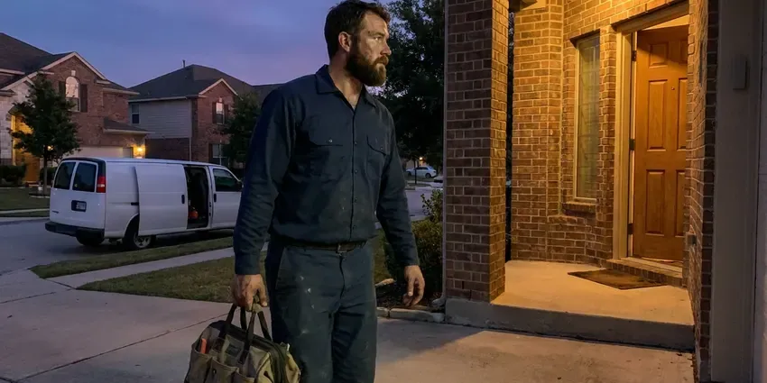

New Construction Plumbing in Minot AFB, ND
Starting a new construction project in Minot AFB, ND means careful planning, particularly for plumbing. HPN Plumbing offers skilled, code-compliant new plumbing installations.
- Code Compliant
- Fast Project Starts
- Code Compliant Work
- Fast Bids From Your Plans
Get Your New Build Plumbed Right the First Time in Minot AFB, ND.
Get a detailed quote for your new construction plumbing project from HPN Plumbing.
Expert New Construction Plumbing Services in Minot AFB, ND
HPN Plumbing installs complete plumbing systems for new homes, guest suites and additions, starting with the underground drain lines before the slab is poured or the floor is framed. We size water service, lay out manifolds and set stub-outs right where your cabinet and fixture plans call for them.
Our expertise includes:
- PEX-A home-run manifolds and copper mains sized for your fixture count
- Sizing and setting main water and sewer lines.
- Gas piping, water heater venting and fully tested final connections

Additional Plumbing Maintenance Services in Minot AFB, ND
Our maintenance and specialty plumbing services in Minot AFB, ND catch small problems before they become emergencies.


Customers
Why Choose HPN Plumbing for New Construction Plumbing in Minot AFB, ND?
We help prevent costly repairs down the line by focusing on quality materials and meticulous installation from day one. This proactive approach saves you time and money.
- Timely Completion, Our team works with other trades to ensure plumbing phases are completed on schedule, keeping your project on track.
- Quality Materials, We select long-lasting piping, fittings, and fixtures chosen for local conditions, including water quality and soil movement.
- Plan-Accurate Layouts, We set every stub-out from your approved plans and cabinet drawings, not guesses.
Citywide Coverage
Whether your project is a single guest house behind an existing home or a ground-up custom house on the edge of Minot AFB, we cover it. We know the permit counters and inspection schedules in the jurisdictions around town.
Experienced Team
Our team of licensed plumbers has extensive experience in new construction plumbing, working on a wide range of residential and commercial projects. They are skilled in reading blueprints, performing accurate pipe layouts, and ensuring all connections are watertight and secure.
Safety-First Approach
We install to the plumbing and fuel gas codes adopted by your city or county and schedule each required inspection. Gas lines are pressure tested and tagged, and water heaters get proper venting, seismic straps where required and a working T&P discharge line.
Trusted Certified Minot AFB Plumbing Services Professionals
At HPN Plumbing, we take pride in providing licensed, certified plumbing services throughout Minot AFB, ND. Backed by leading industry credentials, our experienced plumbers combine technical skill with genuine customer care. Whether it is repair, installation, or maintenance, we follow strict safety and quality standards to deliver long-lasting results you can trust.
Call Us Now PHCC Plumbing Contractor Recognition
PHCC Plumbing Contractor Recognition Better Business Bureau (BBB) Accreditation
Better Business Bureau (BBB) Accreditation Angi Certified Pro
Angi Certified Pro ISO 9001 Quality Management Certification
ISO 9001 Quality Management CertificationReliable New Construction Plumbing Services in Minot AFB, ND
New Construction Plumbing Cost Planning in Minot AFB, ND
Plumbing for a typical new single-family home often runs about 4 to 8 percent of total build cost, depending on fixture count and finish level. A modest three-bedroom home often lands between $12,000 and $25,000, while custom homes with multiple suites and outdoor kitchens run higher. Choices like a manifold PEX system, a recirculation loop and fixture grade affect the price the most. We break the bid out by phase so you can see exactly where the money goes.

Sewer and Drainage Systems in New Builds in Minot AFB
A reliable sewer and drainage system is essential for any new property. We design and install complete sewer lines, septic systems, and storm drains, ensuring proper grading and connection to municipal services or on-site treatment systems. Heavy, expansive clay soils are common in North Dakota, and they swell and shrink with moisture and frost, stressing foundations and buried pipe. We account for soil movement on your lot, using durable PVC piping and careful bedding to prevent future blockages or pipe damage.
Sewer and Water Main Connections in Minot AFB, ND
Connecting your new home to the municipal sewer and water mains is a critical step in new construction plumbing. HPN Plumbing handles all aspects of these connections, including excavation, trenching, pipe laying, and backfilling. We ensure proper grading and sealing to prevent future leaks or blockages. Heavy, expansive clay soils are common in North Dakota, and they swell and shrink with moisture and frost, stressing foundations and buried pipe.
Rough-In and Top-Out Plumbing in Minot AFB, ND
Once framing is up, we run supply and vent lines through the walls and attic and set every stub-out for sinks, tubs, showers and appliances. We typically install PEX-A with a central manifold so each fixture gets its own line and shutoff. Shower valves are set at the heights you choose, and tub sets are installed and protected before the drywall is hung. A full pressure test is held for inspection so nothing hidden in the walls is ever a question.
Guest House, ADU and Addition Plumbing in Minot AFB, ND
Guest houses and additions need plumbing that ties into the existing house without overloading old drain lines. We locate the existing sewer, check its condition with a camera and verify there is enough fall to the new building. Supply lines can be branched from the main house or run as a separate service, depending on distance and pressure. We also handle the trenching between structures and restore the yard when we are done.
Residential New Construction Plumbing in Minot AFB
HPN Plumbing specializes in complete plumbing system installations for new residential homes. This includes designing the layout, installing all water supply lines, drain lines, and vent piping. We work closely with homeowners and builders to ensure the plumbing system is tailored to the home's specifications and future needs, using materials like PEX and copper for supply lines and PVC for drains, chosen for durability in North Dakota climate.
Water Heater Installation for New Builds in Minot AFB
Selecting and installing the right water heater is crucial for any new construction. We provide professional installation of traditional tank-style and tankless water heaters, considering your property's hot water demands and energy efficiency goals. Our plumbers confirm correct sizing, venting, and gas or electrical connections, adhering to all safety regulations for new homes in Minot AFB.

Water Heater and Recirculation Installation in Minot AFB, ND
New homes often use tank water heaters in the garage, basement or utility room, or tankless units on an exterior wall. We size the heater to your bathroom count and install gas or electric connections, venting, an expansion tank and drain pan where required. Many owners add a dedicated recirculation line during rough-in, which is much less expensive than retrofitting later. Water softeners and filters are popular around Minot AFB because they protect water heaters, dishwashers and faucets. If treatment makes sense for your water, we suggest planning space for a softener or filter loop at the same time.
New Construction Plumbing Near Me in Minot AFB, ND
If you're searching for reliable new construction plumbing near me in Minot AFB, ND, HPN Plumbing is your trusted local expert. Our team is ready to move quickly for your project, providing timely and efficient service right in your neighborhood.
Local matters on new builds because inspectors, utility layouts and soil conditions vary from one jurisdiction to the next. We already know what the inspectors around Minot AFB look for at underground, top-out and final. That familiarity spares you reinspection fees and lost days.
HPN Plumbing at a Glance
- Licensed and insured plumbers serving Minot AFB, ND
- 24/7 emergency service with same-day scheduling
- Clear written estimates, no hidden fees
- 4.9-star rated by 408+ North Dakota customers
Minot AFB Map
Minot AFB Information
- Population
- 5,017
- Area codes
- Local
- Service area
- Minot AFB and communities within 40 miles
- Nearby
- Minot, Watford City, Williston, Mandan
Pipe choice, bedding and layout decisions made before the slab is poured or the floor is framed shape the life of the whole plumbing system in a new Minot AFB, ND home. Water softeners and filters are popular around Minot AFB because they extend the life of water heaters, dishwashers and faucets.
Expert Services
Trust our professionals for reliable HPN Plumbing solutions in Minot AFB, ND.
Our Specialized Plumbing Services in Minot AFB, ND
At HPN Plumbing, we provide a complete range of plumbing services across Minot AFB, ND. From leak detection to full system installations, our team ensures fast, precise, and affordable service for both residential and commercial properties. Explore our core services below:


How Our New Construction Plumbing Process Works in Minot AFB, ND
We keep new construction plumbing simple: a clear bid, scheduled phases and a final walkthrough with you.
Request a Quote
Start by calling (701) 403-1348 to schedule a consultation. We will discuss your project plans, review blueprints, and provide a clear, transparent quote for all plumbing work required.
Design & Planning
Our team assists with plumbing system design, ensuring optimal layout and sizing for your new home. We consider water pressure, fixture count, and future expansion possibilities.
Rough-In Installation
We meticulously install all hidden plumbing components, including water supply lines, drain pipes, and vent systems. This phase concludes with complete pressure testing and inspection.
Frequently Asked Questions About New Construction Plumbing in Minot AFB
Most new single-family homes in the Minot AFB area cost between $12,000 and $25,000 to plumb, with larger custom homes running $30,000 or more. Fixture count, pipe material, water heater type and extras like recirculation or outdoor kitchens set the final price. We provide an detailed bid from your plans.
For new construction plumbing, we mainly use PEX piping for water supply lines due to its flexibility, durability, and resistance to scale build-up. For drain, waste, and vent systems, we use PVC pipes, which are corrosion-resistant and long-lasting.
Slow drains on a brand new home, gurgling fixtures, sewer odors or a stub-out that ended up under a wall are typical red flags. These usually trace back to poor slope, missing vents or layout errors before the pour. A camera inspection can confirm the cause before the problem grows.
Yes, our experienced team can assist with the plumbing design and layout for your new home. We work with your architectural plans to improve water flow, drain efficiency, and fixture placement. Our goal is to create a functional, efficient, and code-compliant plumbing system that fits your family's needs.
Heavy, expansive clay soils are common in North Dakota, and they swell and shrink with moisture and frost, stressing foundations and buried pipe. Soil that shifts and swells with moisture changes can put stress on underground plumbing. We mitigate this by using flexible piping materials and proper bedding techniques to help protect against pipe damage from soil movement.
We can run a dedicated return line during rough-in so hot water reaches distant bathrooms in seconds. A dedicated line works better than retrofit crossover valves and adds about $800 to $2,000 depending on layout. It also saves the water that would otherwise run down the drain while you wait for hot water.
Several inspections are required during new construction plumbing. These usually include an underground or rough-in inspection before walls are closed, a top-out inspection if applicable, and a final inspection after all fixtures are installed and the system is operational. We schedule and coordinate all inspections to ensure compliance.
Yes, virtually all new construction plumbing projects in Minot AFB, ND require permits from the local building department. HPN Plumbing handles all required permit applications and ensures that all work passes required inspections at each stage of the project.
What People Are Saying About Our Plumbing Experts?

Daniel K.
A pipe burst at 11 pm and they actually answered. The plumber showed up within the hour, shut everything down, and had us back to normal the next morning. Could not ask for more.
Emergency Plumbing · Bismarck, ND
Robert G.
The trenchless sewer replacement saved our front yard. They walked us through the camera inspection footage first so we knew exactly what we were paying for.
Sewer Line Replacement · Watford City, ND
Patricia H.
We had a slab leak that two other companies could not find. HPN Plumbing located it in under an hour, explained our options, and the price matched the quote to the dollar.
Slab Leak Repair · Minot, ND
Sofia M.
Two new toilets installed in one visit, no mess left behind, and the tech even adjusted a faucet he noticed was dripping. Fair pricing and really friendly.
Toilet Installation · Watford City, NDJames P.
Our commercial plumbing system had a leak under the sink, and HPN Plumbing handled it professionally. The plumbers arrived quickly and restored everything without disruption to our customers.
Commercial Plumbing · Williston, ND
Emily R.
I called HPN Plumbing for plumbing repair, and the technician was fast, polite, and thorough. They explained the problem clearly and fixed it the same day. I will definitely hire them again. Highly recommended!
Plumbing Repair · Mandan, ND